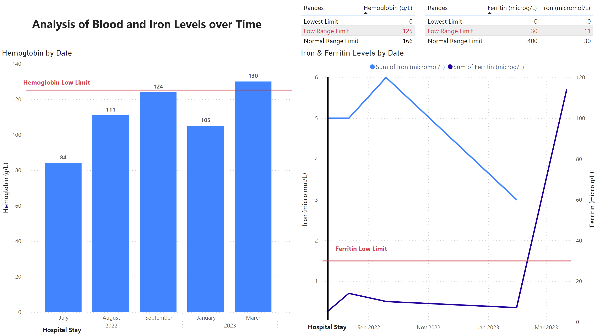

Personal Projects
My Hemoglobin & Iron Levels
In July, 2022, I ended up hospitalized after a collapse. We quickly diagnosed a blood issue but only in early 2023 discovered that it was Iron Deficiency Anemia.
Since then, I've had 4 blood transfusions and 2 iron infusions. I also get blood work done regularly.
I thought it would make a good project to visualize my hemoglobin and iron levels over time so I decided to compile my own records as CSV files and do it using Power BI.
The result is a dashboard that I've put together which gives you a good sense of my progress over time.
Unfortunately, I don't have a Power BI license, so I can't share the actual Power BI file, but I am linking a picture of the dashboard, which is fairly self-explanatory (though not in a medical sense).
Classic Tetris Analysis
I discovered competitive Classic Tetris in late 2021 and immediately got hooked.
I’ve wondered who the most consistent players are overall, and the results surprised me a bit.
Google Data Analytics Capstone Project
The Cyclistic case study represents a fictional company using publicly available data. The given scenario is as follows:
“You are a junior data analyst working in the marketing analyst team at Cyclistic, a bike-share company in Chicago. The director of marketing believes the company’s future success depends on maximizing the number of annual memberships. Therefore, your team wants to understand how casual riders and annual members use Cyclistic bikes differently. From these insights, your team will design a new marketing strategy to convert casual riders into annual members. But first, Cyclistic executives must approve your recommendations, so they must be backed up with compelling data insights and professional data visualizations.”